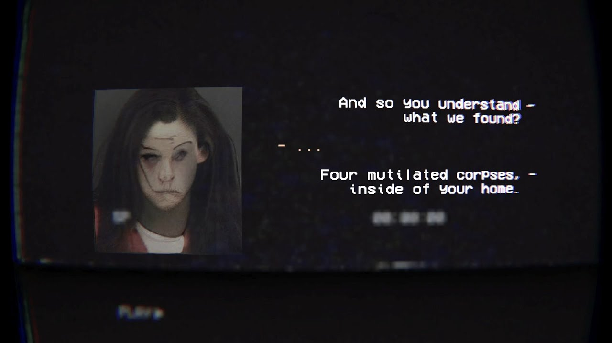
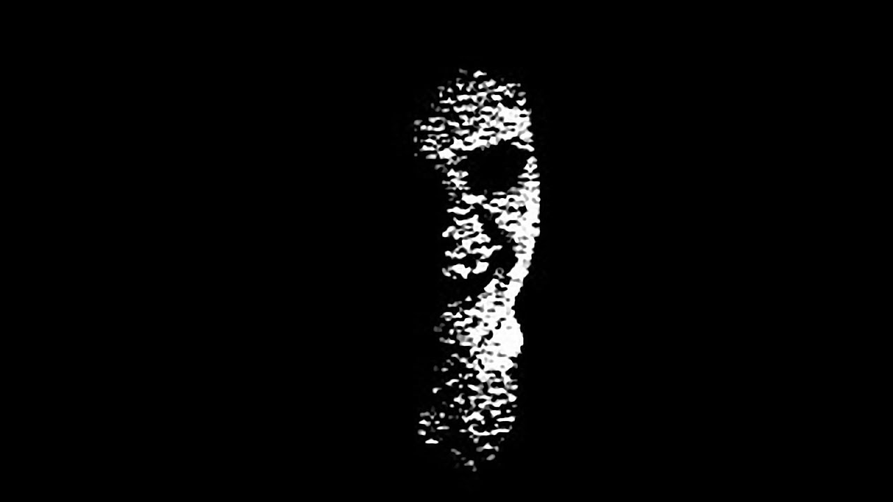
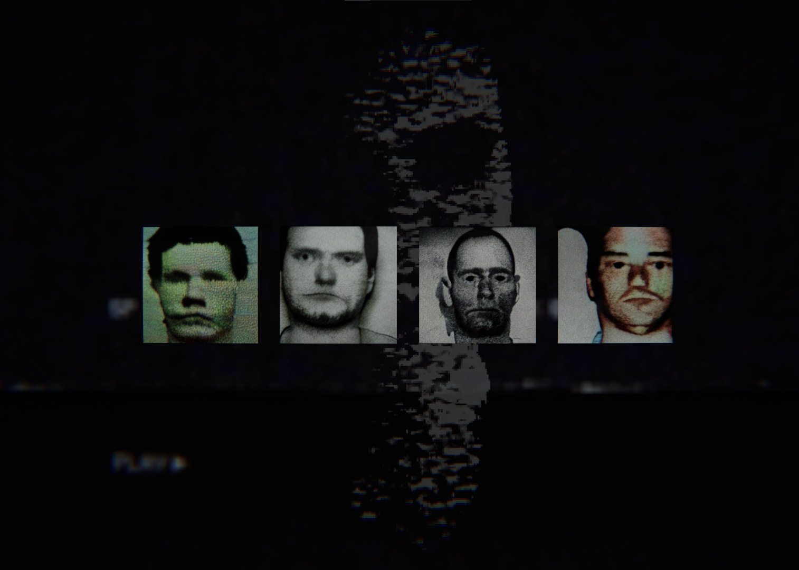

The Floor is Breathing definitely caught me off gaurd as I didn't know what to expect; this game presents itself in both an analog ARG style (very common nowadays) with how they present each characters profiles as well as the distortion of the images and retro pixel horror wher the task is to clean up any traces of the main protagonist's actions. All this while the main protag is trying to figure out through hallucinations and notes on what became of the four dissapearances that you may or may not be involved with. All that with a shadow figure lingering around you at every corner as the jump scare in a overall dark, empty setting was the icing on the cake for this game, the only downside to it is that it's only an estimate of 30 minutes of gameplay but that shows how big of an impression it left on me.
  